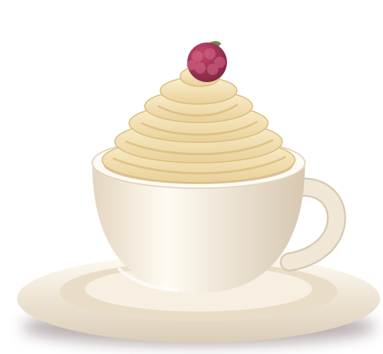
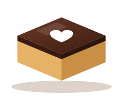
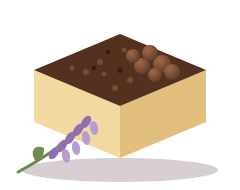

Tarta de frambuesa

Bizcocho de vainilla, crema de mascarpone y capas de chocolate belga.
S/. 18.50
Detalle
Café de especialidad recién molido y repostería artesanal horneada cada mañana. Pasa por una taza y quédate por la conversación.

Abierto todos los días
07:30 a 21:00 hrs · Sin reserva requerida
Granos de especialidad
Villa Rica, Cusco y Puno · Tostado artesanal
Horneado diario
En pequeños lotes con ingredientes naturales
Nuestros postres
Elaboramos en pequeñas tandas para que cada porción llegue con su textura y aroma intactos a tu mesa.
Bizcocho de vainilla, crema de mascarpone y capas de chocolate belga.

Chocolate intenso sobre una base de bizcocho dorado y crocante de nuez.

Migas de cacao crujiente y un delicado toque floral de infusión de lavanda.

Del grano a la taza
Seleccionamos minuciosamente micro-lotes de caficultores peruanos y calibramos la molienda al instante según el método elegido.
Disfruta un espresso vibrante, un pour-over V60 aromático o un capuchino con arte latte. Cada bebida se sirve con dedicación y calidez.
BARISMO ARTESANAL
Cada método resalta notas únicas de acidez, dulzor y cuerpo de nuestros cafés de origen.
9 bares de presión. Cuerpo denso, crema persistente y notas a cacao oscuro.
Filtrado cónico japonés. Taza limpia y brillante con notas florales y frutales.
Infusión lenta en agua fría por 16 horas. Dulzor natural y bajísima acidez.
Inmersión completa por 4 minutos. Resalta los aceites esenciales y cuerpo robusto.
EXPERIENCIAS REALES
"La tarta de frambuesa con la taza de café latte es el mejor maridaje que he probado en Lima. La música suave y el diseño del local hacen que quieras quedarte horas leyendo."
"Se nota el respeto por el origen del café. El barista se tomó el tiempo de explicarme las notas del Geisha de Puno en V60. Y el brownie corazón estaba tibio y delicioso."
"Excelente atención para reuniones de trabajo tranquilas. El wifi es veloz y los postres artesanales son insuperables. 100% recomendado reservar con anticipación."